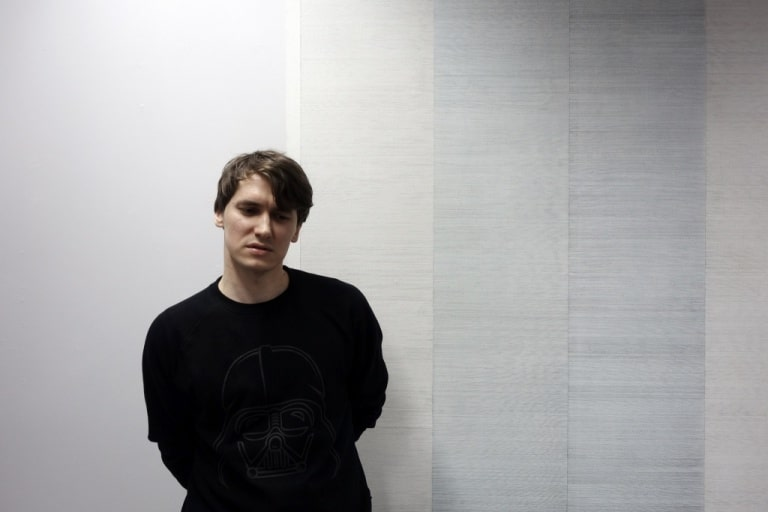

Giedrius Zaura (Lithuania 21-4-1985)
Education
- 2013 M.F.A. in Painting. Vilnius Academy of Arts, Kaunas Art Faculty
- 2011 B.A. in Painting. Vilnius Academy of Arts, Kaunas Art Faculty
Press About Me
Personal Exhibitions
- 2017. "Lex 2", Homo Ludens. Jonava.
- 2017. "Lex", VDU Art Gallery "101". Kaunas.
- 2014. "Suvokimo durys" ("Doors of Perception") KK Vienožinskis Faculty of Arts Gallery. Kaunas.
- 2013. "Atsitiktinumai ir erdvė" ("Contingency and Space") VDA KF exhibition hall. Kaunas.
- 2011. "Vinys" ("Nails") Aukso pjūvis. Kaunas.
Group Exhibitions
- 2017. "Imago Mundi". Meno parkas. Kaunas.
- 2016. "Šiandien prieš vakar" ("Today before yesterday") Meno parkas. Kaunas.
- 2016. "Aš. Kūrybinė stagnacija" ("I. Creative Stagnation") Kabinetas. Kaunas.
- 2016. "Jauna Kauno tapyba" ("Young Painting of Kaunas") VDA Titanikas Gallery. Vilnius.
- 2015. "Daugiau šviesos" ("More Light") Kaunas Photography Gallery. Kaunas.
- 2015. "Tas pats matymo/mąstymo būdas" ("The Same Way of Seeing/Thinking") DSG. Vilnius.
- 2014. "Kurk" ("Create") Meno Forma. Kaunas.
- 2014. "Dėmės" ("Stains") Homo Ludens Gallery. Jonava.
- 2012. "Jauna tapyba" ("Young Painting") Kaunas Picture Gallery. Kaunas.
- 2012. "Polinomai" ("Polynomials") Public Library Gallery. Alytus.
- 2010. "Dailininkų dienos" ("Artists day") Architekts House Gallery. Kaunas.
- 2010. Art Students Paintings. A. J. Juška Family and Ethnic Culture Museum. Vilkija.
- 2009. Art Students Paintings. Kaunas Cultural Centre of Various Nations. Kaunas.
- 2009. Art Students Paintings. Mizarai.
- 2008. Art Students Paintings. Cultural Center Gallery. Kaišiadoriai.